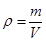

ВЕДОМСТВЕННЫЕ СТРОИТЕЛЬНЫЕ НОРМЫ
ИНСТРУКЦИЯ
ПО ТЕХНОЛОГИИ ЗАДЕЛКИ СТЫКОВЫХ
СОЕДИНЕНИЙ ПАНЕЛЕЙ НАРУЖНЫХ СТЕН
ЗДАНИЙ СОЦКУЛЬТБЫТА И ЖИЛЫХ ДОМОВ
ИЗ ИЗДЕЛИЙ ПРОИЗВОДСТВА
ППО МОСПРОМСТРОЙМАТЕРИАЛЫ
ВСН 242-89
МОССТРОЙКОМИТЕТ
ВЕДОМСТВЕННЫЕ СТРОИТЕЛЬНЫЕ НОРМЫ
ИНСТРУКЦИЯ
по
технологии заделки стыковых соединений
панелей наружных стен зданий соцкультбыта
и жилых домов из изделий производства
ППО Моспромстройматериалы
ВСН 242-89
МОССТРОЙКОМИТЕТ
Разработаны лабораторией строительной физики НИИМосстроя (зав. сектором А. Ю. Зонтов, научный сотрудник Е. Ф. Файфман).
Внесены НИИМосстроем.
Подготовлены к утверждению Главным научно-техническим и технологическим управлением Мосстройкомитета.
Согласованы с Техническим управлением ПСО Главмосстрой, МНИИТЭПом, отделом охраны труда и техники безопасности Мосстройкомитета, городской санитарно-эпидемиологической станцией. Технической инспекцией ЦК профсоюза рабочих строительства и промышленности стройматериалов.
С введением в действие «Инструкции по технологии заделки стыковых соединений панелей наружных стен зданий соцкультбыта и жилых домов из изделий производства ППО Моспромстройматериалы (ВСН 242-89)» утрачивает силу «Инструкция по технологии герметизации стыков наружных стен полносборных зданий (ВСН 15-85)».
Замечания и предложения по содержанию ВСН 242-89 направлять по адресу: 117192, Москва, Винницкая ул., дом 8, лаборатория строительной физики.
|
Московский строительный комитет при Мосгорисполкоме Мосстройкомитет |
Ведомственные строительные нормы |
ВСН 242-89 Взамен ВСН 15-85 |
|
Инструкция по технологии заделки стыковых соединений панелей наружных стен зданий соцкультбыта и жилых домов из изделий производства ППО Моспромстройматериалы |
1.1. Настоящая инструкция содержит требования, предъявляемые к производству работ по герметизации и теплоизоляции стыков наружных стен при монтаже зданий соцкультбыта и жилых домов из изделий производства ППО Моспромстройматериалы.
1.2. Работы по герметизации и теплоизоляции стыков должны выполняться в соответствии с рабочими чертежами проекта и настоящей инструкцией.
1.3. Герметизацию и теплоизоляцию стыков должны выполнять рабочие, прошедшие специальное обучение и получившие удостоверение на право производства работ.
1.4. Для герметизации и теплоизоляции стыков и грунтовки кромок панелей должны применяться материалы, удовлетворяющие требованиям действующих технических условий (разделы 2-8 настоящей инструкции и приложение 1).
1.5. Замена предусмотренных проектом герметизирующих, теплоизолирующих и уплотняющих материалов другими, аналогичными материалами допускается лишь по согласованию с организацией - автором проекта.
|
Внесены
|
Утверждены
|
Срок
введения 01.01.90 г. |
1.6. Герметизирующие и теплоизолирующие материалы должны храниться в сухих закрытых помещениях с соблюдением требований ТУ на эти материалы и в соответствии с правилами пожарной безопасности. При истечении срока хранения необходимо провести контрольные испытания герметизирующих и теплоизолирующих материалов на соответствие требованиям технических условий. Каждая партия герметизирующих и теплоизолирующих материалов должна иметь паспорт завода-изготовителя.
1.7. Работы по герметизации стыков следует выполнять в последовательности, предусмотренной картами трудового процесса, соблюдая требования СНиП 3.01-85 «Организация строительного производства», СНиП 3.03.01-87 «Несущие и ограждающие конструкции».
1.8. Для производства работ по герметизации и теплоизоляции стыков рекомендуется применять механизмы, оборудование и инструменты, технические характеристики которых приведены в приложении 2.
2.1. При герметизации стыков «закрытого» типа вулканизующимися двухкомпонентными герметиками АМ-0,5, Тиопрол-2 на заводе-изготовителе наружных стеновых панелей производится грунтовка их стыкуемых поверхностей в соответствии с требованиями проекта. В качестве грунтовочного состава используются высыхающая мастика 51-Г-18, состав ЛСГ-905.
2.3. Состав 141-50 25%-ной концентрации наносится кистью на бетонные кромки элементов наружных стен непосредственно перед заделкой стыков герметиком «Эластосил 11-06». При загустевании состав разбавляется до вышеуказанной концентрации бензином марок Б-70, БР-1, «Галоша» или толуолом на базе комплектации или непосредственно на стройплощадке.
3.1. Для уплотнения горизонтальных и вертикальных стыков «закрытого» типа применяются пенополиэтиленовые уплотняющие прокладки «Вилатерм-СП» или резиновые пористые уплотняющие прокладки типа ПРП-40.
Прокладки «Вилатерм-СП» должны быть поперечно обжаты в стыке на 20-70 %.
3.4. В вертикальных стыках пористые прокладки устанавливаются:
а) насухо - при установке прокладки в горизонтальные и вертикальные «закрытые» стыки со стороны фасада в качестве подосновы под вулканизующиеся герметики;
б) на клее «Хемиэоль» или КН-2 - при установке второй прокладки в вертикальный «закрытый» стык с его внутренней стороны и при наклеивании второй прокладки в горизонтальный «закрытый» стык на гребень панели нижележащего этажа.
3.5. В горизонтальном стыке наклейку пористых прокладок следует производить с перекрытия в следующей технологической последовательности:
а) очистить верхние грани ранее смонтированных панелей от пыли, приставшего раствора и других загрязнений, а в зимнее время - от снега и наледи. Очистку рекомендуется выполнять шпателями, волосяными щетками и чистыми обтирочными концами. При этом необходимо следить, чтобы слой грунтовки не имел механических повреждений. После дождя и снегопада необходимо протереть слой грунтовки на кромке сухими чистыми обтирочными концами;
б) при использовании герметика «Эластосил 11-06» огрунтовать кромки панелей в соответствии с пп. 2.2-2.3 настоящей инструкции;
в) на верхние грани, в местах наклейки пористых прокладок, нанести кистью «Хемизоль» или КН-2;
г) наклеить пористые прокладки на загрунтованную поверхность и сверху нанести на них клей «Хемизоль» или КН-2 непосредственно перед установкой панели монтируемого этажа.
3.6. Изнутри в зазор вертикального стыка наклейку пористых прокладок следует производить в следующей технологической последовательности:
а) очистить вертикальные торцы стыкуемых панелей от приставшего раствора и других загрязнений;
б) при применении герметика «Эластосил 11-06» произвести огрунтовку стыкуемых поверхностей (см. пп. 2.2-2.3);
в) непосредственно перед установкой пористой прокладки, в местах ее приклейки на вертикальные торцы нанести кистью клей «Хемизоль» или КН-2;
г) установить пористую прокладку деревянной конопаткой между загрунтованными кромками торцов и нанести на нее клей «Хемизоль» или КН-2.
3.7. Недопустимо растягивать пористые прокладки при их установке.
3.8. В вертикальные и горизонтальные стыки пористые прокладки следует устанавливать без разрывов, обрезая концы «на ус» и склеивая клеем «Хемизоль» или КН-2 места соединения и пересечения. Наращивать прокладки по длине следует так, чтобы расстояние от мест пересечения горизонтальных и вертикальных стыков до места наращивания было не менее 0,5 м.
4.1. Для уплотнения горизонтальных стыков применяется герметизирующий и утепляющий вкладыш, состоящий из полосы минераловатного мата, обернутой с 3 сторон кровельным материалом из невулканизированной резины марки «Бутерол» или с 4 сторон полиэтиленовой пленкой.
4.2. Размеры утепляющего вкладыша составляют 70´90´1000 мм. Общая длина одной прокладки - 1100 мм, включая соединительный напуск защитной оболочки.
4.3. Прокладка устанавливается на верхние грани смонтированных панелей в той же технологической последовательности, что и «Вилатерм-СП» или ПРП-40 (см. п. 3.4), незащищенной резиной «Бутерол» стороной или отверстиями от сварки полиэтиленовой пленки внутрь помещения. В стыке прокладка должна быть обжата до величины проектного зазора (порядка 20 мм).
4.4. Для фиксации прокладки в проектном положении используется клей «Хемизоль» или КН-2.
4.5. Соединяют прокладки по длине, вставляя последующую прокладку в соединительный напуск предыдущей защитной оболочки.
5.1. В соответствии с проектным решением колодец вертикальных стыков оклеивается изнутри невулканизованной резиновой лентой «Герлен-Д» или «Герволент» шириной 180 мм.
5.2. Для приклейки воздухозащитной ленты «Герлен-Д» применяют состав 51-7-18, для приклейки ленты «Герволент» - клей «Хемизоль» или КН-2.
5.3. Перед наклейкой воздухозащитной ленты необходимо тыльные грани колодца вертикальных стыков очистить от загрязнений, а в зимнее время - от инея и снега. Очистку следует выполнять шпателями, волосяными щетками и чистыми обтирочными концами. При этом необходимо следить, чтобы слой грунтовки не имел механических повреждений.
5.4. Положение верхнего края ленты при ее наклейке должно точно соответствовать проекту.
5.5. Ленту «Герлен-Д» наклеивают, предварительно сняв защитную силиконовую бумагу, не вытягивая, а приглаживая от центра к краям в поперечном направлении, чтобы исключить возможность образования на ее поверхности воздушных пузырей.
5.6. При наклеивании ленты «Герволент» производят следующие операции:
а) перемешивание клея до однородного состояния;
б) нанесение клея на стыкуемые бетонные поверхности и ленту «Герволент»;
в) после подсыхания клея до отлила плотно прижимают ленту к тыльным граням колодца вертикальных стыков;
г) прижатие ленты производится не вытягиванием, а приглаживанием от центра к краям в поперечном направлении, чтобы исключить возможность образования на ее поверхности воздушных пузырей.
5.7. Работы по оклейке, стыков воздухозащитной лентой могут производиться при температуре не ниже -20 °С. При этом температура ленты и клея должна быть в пределах 15-20 °С (ленты и клей хранятся в будке герметчиков).
6.1. Заполнение стыков пенопластом ФРП-1 осуществляется поэтажно с панелей перекрытий.
6.2. Заполнение стыков осуществляется порционной заливкой в полость стыка жидкой композиции ДРП-1. Для этого два компонента: фенольно-резольную смолу ФРВ-1А и продукт ВАГ-3 подогревают до температуры 35-40 °С (летом), 40-50 °С (зимой), смешивают в соотношении 4:1 и заливают в стык.
6.3. Соединение и перемешивание компонентов производится непосредственно перед заливкой жидкой композиции в стык. Длительность перемешивания не должна превышать 30-40 с.
6.4. Заливка стыка осуществляется в несколько приемов. В каждый прием заливается порция композиции 0,8-1,5 л в зависимости от объема стыка. Количество таких порций на вертикальный и горизонтальный стык должно быть 3-4.
6.5. Для предотвращения вытекания жидкой композиции ФРП-1 из полости вертикального стыка и обеспечения согласно проекту качественного заполнения стыка теплоизоляцией перед заливкой композиции на всю высоту стыка устанавливают специальную опалубку.
Опалубкой может служить жгут из вспененного полиэтилена «Вилатерм-СП» плотно его обжимаемой между наружной и внутренней стеновыми панелями. Другим вариантом опалубки вертикального стыка может быть стальной уголок или деревянная доска, усеченная на конус, с приклеенным слоем эластичного пенополиуретана (ППУ) и плотно обтянутая снаружи прочной, но эластичной полиэтиленовой пленкой.
Опалубка должна прочно и надежно входить в стык для предотвращения вытекания жидкой композиции в начальный период и обеспечения качественного заполнения стыка пенопластом ФРП-1.
6.6. После заливки последней порции композиции ФРП-1 сверху на вертикальный стык для ограничения высоты вспенивания пенопласта устанавливается дополнительная фиксирующая опалубка.
6.7. При устройстве теплоизоляции горизонтальных стыков установку опалубки производят после заливки в стык каждой порции жидкой композиции.
Опалубкой для горизонтального стыка может служить доска с приклеенным слоем эластичного ППУ, плотно обернутая прочной полиэтиленовой пленкой. В период вспенивания пенопласта опалубка прижимается с усилием, ограничивающим уровень вспенивания пенопласта, на высоту, не превышающую проектной.
6.8. Распалубка стыков выполняется сразу же по окончании процесса вспенивания и частичного отверждения пенопласта.
6.9. Заливку очередной порции жидкой композиции в стык производят после окончания вспенивания и частичного отверждения предыдущей порции.
6.10. Срезание поверхностного наружного слоя ФРП-1 не допускается.
7.1. Для обеспечения водо- и воздухонепроницаемости горизонтальных и вертикальных «закрытых» стыков необходимо точно выполнять проектные решения по их герметизации вулканизирующимися герметиками АМ-0,5, «Тиопрол-2» или «Эластосил 11-06».
7.2. Двухкомпонентные вулканизующиеся герметики АМ-0,5 и «Тиопрол-2» поставляются заводом-изготовителем комплектно, в весовой дозировке согласно паспорту на каждую партию герметика. Нарушать весовую дозировку, приведенную в паспорте, запрещается.
7.3. Приготовление герметика (дозирование и перемешивание герметизирующей и отверждающей паст) должно производиться на месте работ (в будках герметчиков) такими порциями, которые можно израсходовать полностью в течение половины рабочей смены (4 часа). Перемешивание компонентов герметика производится с помощью электросверлилки ИЭ-1035 со специальной насадкой до получения однородной по цвету массы. Перемешивание компонентов вручную запрещается.
7.4. Однокомпонентный герметик «Эластосил 11-06» поставляется заводом-изготовителем в комплекте с грунтовочным составом 141-50.
7.5. Перевозить и хранить грунтовочный состав 141-50 необходимо в герметично закрытой таре завода-изготовителя.
Складирование его должно производиться в сухих, закрытых, вентилируемых помещениях при температуре от –30 °С до +30 °С. Срок хранения грунтовочного состава в герметично закрытой таре завода-изготовителя - 12 месяцев с момента изготовления.
7.6. Разбавлять растворителем любые вулканизующиеся герметики запрещается.
7.7. Перед нанесением герметиков необходимо произвести осмотр стыков, проверку качества уплотнения зазоров прокладкой (см. раздел 3 настоящей инструкции).
7.8. До начала герметизации вулканизующимися герметиками кромки панелей и поверхность прокладки в стыке должны быть очищены от пыли и загрязнений, а в зимнее время - от снега и наледи.
7.9. Наносить герметизирующую мастику в устье стыка следует не позднее чем через 1 час после подготовки поверхностей (очистки от грязи, снега и т.д.).
7.10. Кромки панелей в момент герметизации должны быть сухими. Производить герметизацию во время дождя, снегопада, а также при мокрых кромках панелей запрещается.
7.11. Температура двухкомпонентных герметиков АМ-0,5, «Тиопрол-2», независимо от температуры наружного воздуха, должна быть +15-20 °С. Зимой подогрев герметика производится в электрошкафах, которые должны быть установлены в будке герметчиков. Температура в электрошкафу не должна превышать +30 °С.
7.12. Работа по герметизации стыков однокомпонентным герметикой «Эластосил 11-06» выполняется без его предварительного подогрева. Подогревать этот герметик запрещается. Непосредственно перед нанесением «Эластосил 11-06» бетонные кромки покрывают грунтовкой 141-50.
7.13. Вулканизующиеся герметики наносятся в стык с помощью пневмошприца или шпателя с точным соблюдением профиля герметика, указанного в проекте.
7.14. Уложенный в стык слой герметика не должен иметь разрывов и наплывов, толщина его в вертикальных и горизонтальных стыках должна соответствовать требованиям проекта.
После нанесения герметика следует выровнять его поверхность и загладить шпателем.
7.15. Зимой герметизацию стыков вулканизующимися герметиками следует выполнять при температуре наружного воздуха до –20 °С.
8.1. Нетвердеющая мастика поставляется с завода-изготовителя готовой к употреблению и расфасованной в брикеты, обернутые полимерной пленкой.
8.2. До начала герметизации стыка мастикой кромки панелей в стыке должны быть очищены от пыли и загрязнений, а в зимнее время - от снега
8.4. Укладка в стык нетвердеющей мастики производится с помощью электрогерметизатора «Стык-20». В зимнее время включается электрообогревающая насадка герметизатора, чтобы температура мастики, нагнетаемой в стык, была в пределах 35-40 °С.
8.5. Мастичный валик не должен иметь разрывов и наплывов. После заполнения стыков нетвердеющую мастику следует уплотнить с помощью расшивки так, чтобы ее слой был не менее 20 мм и плотно, без пустот, прилегал к кромкам стыка.
8.6. Герметизация зазоров между оконными (балконными) блоками и четвертями панелей наружных стен крупнопанельных домов должна выполняться нетвердеющей мастикой на заводах-изготовителях панелей в соответствии с требованиями проекта и пп. 8.3-8.5 настоящей инструкции. Подоконные сливы должны устанавливаться на нетвердеющей мастике в соответствии с требованиями проекта и пп. 8.3-8.5 настоящей инструкции.
8.7. Использовать нетвердеющую мастику для герметизации стыков панелей длиной более 4 м не допускается.
8.8. Производить герметизацию стыков нетвердеющей мастикой при температуре наружного воздуха ниже –20 °С не рекомендуется.
9.1. Работы по герметизации и теплоизоляции стыков должны выполняться под контролем технического персонала строительно-монтажного управления (участка) и периодическим контролем лаборатории.
9.2. Качество уплотняющих прокладок, воздухозащитных лент, клеев, герметиков и компонентов пенопласта ФРП-1 должно контролироваться лабораторией УПТК согласно ТУ, а также требованиям настоящей инструкции.
9.3. Качество сцепления ленты с поверхностью стыков проверяется выборочно, методом отрыва ленты от поверхности панелей. При нормальном сцеплении происходит разрыв по ленте.
9.4. Перед нанесением герметика в стык наружным осмотром проверяется обжатие уплотняющих пористых прокладок (см. пп. 3.2, 3.3, 4.3). Глубина оставленного для герметика зазора проверяется линейкой с делениями.
9.5. Контроль качества теплоизоляции из ФРП-1 в стыках проводят по следующим показателям: степень заполнения стыка ФРП-1, внешний вид и плотность пенопласта.
9.6. Степень заполнения стыка проверяется на каждом участке стыка после его распалубки. Пенопласт должен заполнять весь объем стыка. В случае, если заполнение стыка неполное, следует теплоизолировать этот участок повторно.
9.7. Внешний вид пенопласта ФРП-1 проверяют визуально.
9.8. Плотность пенопласта ФРП-1 в стыке определяют по ГОСТ 17177-81 путем отбора проб с наружной поверхности теплоизоляции стыка по 3 образца сечением 5´3 см с сохранением на образцах уплотненного поверхностного слоя.
Участки с выбранным пенопластом теплоизолируются вновь. Плотность пенопласта (r в кг/м3) вычисляется по формуле:

где m - масса высушенного образца, кг;
r - объем образца, м3.
9.9. Контроль плотности теплоизоляции в стыках производится не менее чем на 3 стыках каждой секции дома.
9.10. Проверка сплошности поверхностного слоя и полного заполнения полости стыков проводится после снятия с них опалубки.
9.11. Контроль качества заделки стыков вулканизующимися и нетвердеющими герметиками состоит из проверки:
а) температуры герметика;
б) толщины и непрерывности слоя герметика.
9.12. Выполнение работ по герметизации и теплоизоляции фиксируется в «Едином маршрутном журнале операционного контроля, оценки качества и промежуточной технологической приемки отдельных видов работ и конструктивных элементов при возведении панельно-блочных домов», отмечается посменно на фасадных схемах герметизации стыков.
10.1. При производстве работ по герметизации и теплоизоляции стыков должны соблюдаться требования СНиП III-4-80 «Техника безопасности в строительстве», «Указаний по пожарной безопасности для рабочих и инженерно-технических работников Главмосстроя», «Правил пожарной безопасности при производстве строительно-монтажных работ» (утвержденных ГУПО МВД СССР 4 ноября 1977 г.; М: Стройиздат, 1978) и настоящей инструкции.
10.2. Для герметизации стыков наружных стеновых панелей на фасадах следует пользоваться: по ходу монтажа этажей - навесными площадками, а по окончании монтажных операций - навесными люльками (ЛС-80-250, ЛЭ-100-300). В соответствии с проектом производства работ навесные площадки и люльки устанавливают на рабочее место после монтажа и закрепления панелей перекрытия, а затем надежно крепят эти площадки или люльки к монтажным петлям панелей.
Производить перемещение навесной площадки допускается лишь при отсутствии на ней людей, материалов и инструмента.
К работе на навесных площадках и люльках допускаются только специально обученные рабочие, назначенные приказом по строительному управлению.
10.3. Перед перемешиванием и нанесением герметика должны быть проверены и при необходимости исправлены либо отрегулированы:
а) у преобразователя частоты тока и электросверлилки - зануление корпуса и изоляция проводов;
б) в электрошкафах - зануление корпуса, терморегуляторы и изоляция проводов;
в) у компрессора - правильность показаний манометра, предохранительный клапан;
г) в пневмошприце - ход (подвижность) поршня.
10.4. Перед перемешиванием и заливкой компонентов фенольно-резольного пенопласта (ФРП-1) в стыки должны быть проверены и при необходимости исправлены либо отрегулированы:
а) в установке для заливки ФРП-1 - терморегуляторы, зануление корпуса и изоляция проводов;
б) у опалубок - целостность полиэтиленовой пленки.
10.5. Перед началом работ по герметизации и теплоизоляции стыков на стройплощадке должны быть вывешены плакаты и предупредительные надписи, разъясняющие безопасные способы выполнения работ.
10.6. Герметчики и теплоизолировщики должны:
а) быть обучены безопасным и прогрессивным приемам выполнения соответствующих операций технологического цикла;
б) иметь наряд-допуск на производство этих работ, а до их начала - быть проинструктированы по технике безопасности на рабочем месте;
в) допускаться к работе с герметиками, фенольно-резольным пенопластом (ФРП-1) и лентами, содержащими токсичные и легко летучие огнеопасные вещества только после прохождения медицинского освидетельствования и специального обучения, а также инструктажа о свойствах материалов и мерах пожарной безопасности.
10.7. Электрооборудование будки герметчиков должно быть заземлено. Включать и выключать его разрешается только дежурному электрику.
10.8. Хранение состава 141-50, органических растворителей и жидких компонентов ФРП-1, а также тары из-под них допускается только в помещениях, безопасных в пожарном отношении и имеющих хорошую вентиляцию.
10.9. Запрещается пользоваться открытым огнем и курить в местах, где проводится розлив, дозировка и перемешивание грунтовочного состава 141-50, КН-2, растворителей и жидких компонентов ФРП-1.
10.10. Для предотвращения искрообразования категорически запрещается вскрывать металлическую тару с клеем КН-2, другими видами клея, грунтовочным составом 141-50, жидкими компонентами фенольно-резольного пенопласта, ударяя по ним стальными предметами. Открывать тару следует неискрящимися бронзовыми ключами или деревянной конопаткой.
10.11. Во избежание накопления газов и разрыва тары при хранении жидких компонентов ФРП-1 необходимо обеспечить сообщение тары с атмосферой посредством открывания пробок в бочках или установить специальные заглушки, имеющие каналы сообщения с атмосферой.
10.12. Категорически запрещается разогревать металлическую тару с любым из 2 жидких компонентов ФРП-1.
10.13. Строго запрещается нагревание продукта ВАГ-3 - жидкого компонента ФРП-1 выше температуры 50 °С, так как при этом идет процесс частичного разложения продукта с выделением газов.
10.14. Пустую тару от идея КН-2, грунтовочного состава 141-50 и компонентов ФРП-1 запрещается оставлять на перекрытии или в будке герметчиков ввиду ее взрыво- и пожароопасности.
10.15. При попадании грунтовочного состава 141-50 или органического растворителя на внутренние бетонные поверхности место розлива немедленно посыпать песком и очистить.
10.16. При попадании фенольно-резольной смолы, катализатора или жидкой композиции ФРП-1 на внутренние бетонные поверхности необходимо эти поверхности очистить, обработать светлой эмалью или нитроэмалью, просушить и прошпатлевать.
10.17. При заливке стыков фенольно-резольным пенопластом (ФРП-1) рабочие должны применять индивидуальные страховочные приспособления.
10.18. Герметчики и теплоизолировщики должны быть обеспечены спецодеждой из брезента, рукавицами, резиновыми перчатками, профилактическими мазями для смазывания кожи рук перед началом работы, 5 %-ным раствором гипосульфита или 10%-ным раствором бисульфита натрия для очистки рук по окончании работы или рабочей смены. Кроме того, теплоизолировщики должны быть обеспечены респираторами «Лепесток-200», «Астра-2», РУ-60М, защитными очками.
10.19. При попадании продукта ВАГ-3 на незащищенную кожу необходимо быстро промыть пораженное место водой.
10.20. При попадании фенольной смолы на кожу необходимо протереть пораженное место уайт-спиритом затем промыть водой.
|
№ п/п |
Наименование материалов |
Обозначение стандарта или технических условий, изготовитель |
Описание материала |
Назначение и применение |
|
1 |
2 |
3 |
4 |
5 |
|
1. |
Мастика вулканизирующаяся тиоколовая АМ-0,5 |
ТУ 84-2446-85, Московский з-д строительных красок и герметиков ПО Мосстройпластмасс |
Двухкомпонентный материал на основе полисульфидного каучука (тиокола), пастообразный перед перемешиванием и резиноподобный после вулканизации (через 4-8 часов); цвет светло-серый |
Для герметизации стыков элементов наружных стен, остекления и сопряжения витражей и др. светопрозрачных ограждений. Наносится шприцем или шпателем. Применяется при температуре наружного воздуха не ниже –20 °С с подогревом |
|
2. |
Мастика герметизирующая вулканизирующаяся «Тиопрол-2» |
ТУ 400-1-411-99-85, Московский з-д строительных красок и герметиков ПО Мосстройпластмасс |
Двухкомпонентный материал на основе синтетического каучука ТПМ-полимера (пастообразный перед смешением и резиноподобный после вулканизации); цвет светло-серый |
Для герметизации стыков элементов наружных стен. Наносится шприцем или шпателем. Применяется при температуре наружного воздуха не ниже -20 °С с подогревом |
|
3. |
Клей-герметик вулканизующийся кремнийорганический «Эластосил 11-06» |
ТУ 6-02-775-78, Данковский химкомбинат Минхимпрома СССР, г. Данков Липецкой обл. |
Однокомпонентный вулканизующийся материал на основе полиорганосилоксанового каучука (силикона); цвет светло-серый |
Для герметизации стыков элементов остекления и мест сопряжения витражей и панелей. Наносится шприцем или шпателем. Применяется при температуре наружного воздуха не ниже -20 °С без подогрева |
|
4. |
Продукт 141-50 (ГЖК-8М) |
ТУ 6-02-982-75, Данковский химкомбинат Минхимпрома СССР, г. Данков Липецкой обл. |
Бесцветная жидкость на основе полиорганосилоксанового каучука 25 %-ной концентрации. Применяется только в комплекте с герметиком «Эластосил 11-06» |
Для грунтовки пористых стыкуемых поверхностей перед герметизацией Эластосилом 11-06. Наносится кистью при температуре наружного воздуха до –20 °С без подогрева |
|
5. |
Мастика высыхающая 51-Г-18 |
ТУ 400-1-137-78, Московский з-д строительных красок и герметиков ПО Мосстройпластмасс |
Жидкий материал на основе дивинилстирольного термоэластопласта ДСТ-30, инденкумароновой смолы, наполнителей, растворителей |
Для грунтовки стыкуемых поверхностей наружных стеновых панелей. Наносится кистью или набрызгом с подогревом |
|
6. |
Состав латексный гидроизоляционный марки ЛСГ-905 |
ТУ 400-1-209-80, Московский з-д строительных красок и герметиков ПО Мосстройпластмасс |
Жидкий водно-дисперсный материал на основе синтетических каучуков |
Для грунтовки стыкуемых поверхностей наружных стеновых панелей. Наносится кистью или набрызгом только при положительной температуре |
|
7. |
Прокладки пенополиэтиленовые уплотняющие «Вилатерм-СП» |
ТУ 6-05-2049-87, комбинат «Стройдеталь» ПСО Главмосстрой |
Пенополиэтилен, получаемый экструзией полиэтилена низкой плотности (ГОСТ 16337-77) марки 020 |
Для уплотнения стыков наружных стеновых панелей и оконных проемов. Температурные пределы эксплуатации от -60°С до +60 °С. Применяется при температуре не ниже –20 °С с подогревом |
|
8. |
Прокладки резиновые пористые уплотняющие ПРП-40 |
ГОСТ 19177-81, Песковский комбинат строительных материалов, пос. Пески Раменского р-на Московской обл. |
Пористые резиновые прокладки на основе синтетических каучуков: бутадиенстирольного, хлоропренового, бутадиенового |
Для уплотнения стыков сборных элементов. Температурные пределы эксплуатации от –40 °С до +70 °С. Применяется при температуре не ниже –20 °С с подогревом |
|
9. |
Прокладки уплотняющие из минераловатной плиты |
УПТК ДСК-1 |
Минераловатная плита марки 75 (ГОСТ 21880-76) в защитной оболочке из гидроизоляционного материала «Бутерол» (ТУ 400-2-424-88) или полиэтиленовой пленки (ГОСТ 10354-82) |
Для уплотнения горизонтальных стыков |
|
10. |
Лента герметизирующая «Герлен-Д» |
ТУ 400-1-165-79, Завод кровельных и полимерных материалов ПО Мосстройпластмасс |
Рулонный гидроизоляционный материал, получаемый экструзией бутилкаучука, мягчителей, наполнителей и добавок, дублированный нетканым синтетическим материалом |
Для оклейки изнутри вертикальных стыков. Применяется при температуре наружного воздуха не ниже –20 °С с подогревом |
|
11. |
Лента воздухозащитная «Герволент» |
ТУ 21-29-46-84, Вильнюсский з-д резинотехнических изделий Минпромстройматериалов Литовской ССР |
Рулонный гидроизоляционный материал, изготовляемый из смесей синтетических каучуков, термоэластопластов, наполнителей и добавок. Ширина - 180 мм; длина - 3,2 м |
Для оклейки изнутри вертикальных стыков. Применяется при температуре наружного воздуха не ниже –20 °С с подогревом |
|
12. |
Клей «Хемизоль» |
Эрфуртский химкомбинат, г. Эрфурт, ГДР |
Однородный жидкий материал на основе синтетических каучуков, наполнителей и растворителей |
Для приклеивания: воздухозащитных лент (при герметизации стыков), пористой прокладки к кромкам панелей при температуре наружного воздуха до -20 °С с подогревом |
|
13. |
Мастика клеящая кумаронокаучуковая КН-2 |
ГОСТ 24064-80, РТИ-2 Московского ПО Каучук Министерства химической и нефтеперерабатывающей промышленности СССР |
Однородный жидкий материал на основе полихлоропренового каучука и индекумароновой смолы, каолина, мела и растворителей |
Для приклеивания воздухо-защитных лент (при герметизации стыков), пористых прокладок к кромкам панелей при температуре наружного воздуха до –20 °С с подогревом |
|
14. |
Заливочный фенольнорезольный пенопласт (ФРП-1) |
ТУ 6-05-221-304-74 |
Мелкопористый материал однородной структуры розового цвета на основе резольной смолы ФРВ-1 (ТУ 6-05-1104-78) и продукта ВАГ-3 (ТУ 6-55-116-88) |
Для теплоизоляции вертикальных и горизонтальных стыков |
|
№ п/п |
Наименование средства технического оснащения |
ГОСТ или ТУ, наименование организации-разработчика, завода-изготовителя, № проекта (рабочего чертежа) |
Назначение средства технического оснащения |
Рекомендуемое кол-во средств технического оснащения для комплексного выполнения работ (на звено из восьми человек) |
|
|
1 |
2 |
3 |
4 |
5 |
|
|
1. |
Передвижная компрессорная установка для монтажных работ СО-7Б |
ГОСТ 12522-75, Вильнюсское производственное объединение строительно-отделочных машин Главстройинструмента Минстройдормаша |
Для подачи воздуха в пневмошприцы |
1 |
|
|
2. |
Рукав резиновый Г-10 диаметром 9 мм |
Для подводки сжатого воздуха к пневмоширицу |
Длина по месту |
|
|
|
3. |
Кисть-ручник КР-35 |
ГОСТ 10597-80, ВНИИСМИ Минстройдормаша |
Для нанесенния грунтовки и клея |
8 |
|
|
4. |
Шпатель универсальный со сменными полотнами |
Трест Мосоргстрой ПСО Главмосстрой, раб. черт. № 4407, 4008, 4411 |
Для нанесения вулканизующихся герметизирующих мастик |
8 |
|
|
5. |
Конопатка деревянная |
Изготавливается на площадке |
Для установки прокладок |
8 |
|
|
6. |
Пневмошприц для вулканизующихся мастик |
СКБ-Мосстрой, проект № 6278 |
Для укладки вулканизующихся мастик в стык |
2 |
|
|
7. |
Электросверлилка ИЭ-1035 с насадкой |
з-д Электроинструментов, г. Ростов-на-Дону |
Для приготовления вулканизующихся мастик (смешение компонентов) АМ-0,5 и «Тиопрол-2» |
2 |
|
|
8. |
Электрошкаф |
СКБ-Мосстрой, проект № 6278 |
Для подогрева герметиков |
1 |
|
|
9. |
Расшивки стальные РВ-1, РВ-2 |
ГОСТ 12803-76, ВНИИСМИ Минстройдормаша |
Для выравнивания поверхности мастики |
8 |
|
|
10. |
Электрогерметизатор «Стык» |
ВНИИСтройполимер, проект № 4424 |
Для герметизации горизонтальных и вертикальных стыков, мест примыкания светопрозрачных ограждений не твердеющей мастикой (ГОСТ 14791-79) |
2 |
|
|
11. |
Люлька самоподъемная ЛС-80-250 |
СКБ-Мосстрой, проект № 2728 ЭМЗ объединения Мосстроймеханизация ППО Мосмонтажспецстроя |
Для герметизации горизонтальных и вертикальных стыков «закрытого» типа по окончании монтажных операций |
2 |
|
|
12. |
Люлька самоподъемная ЛЭ-100-300 |
СКБ-Мосстрой, проект № 2728 ЭМЗ объединения Мосстроймеханизация ППО Мосмонтажспецстроя |
Для герметизации горизонтальных и вертикальных стыков «закрытого» типа по окончании монтажных операций |
2 |
|
|
13. |
Площадка навесная для монтажника |
Трест Мосоргстрой, проект № 1999С, филиал № 1 объединения Моспромстроймеханизация |
Для герметизации стыков наружных стеновых панелей на фасадах по ходу монтажа этажей |
1 |
|
|
14. |
Установка для заливки жидкой композиции фенольно-резольного пенопласта (ФРП-1) |
ДСК-1 ПСО Главмосстрой |
Для подогрева, смешения и заливки компонентов ФРП-1 |
1 |
|
СОДЕРЖАНИЕ